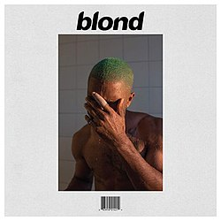

How Frank Ocean Released "Blonde"
What is so significant about this release?
Frank Ocean didn't follow typical music marketing procedure when he shared his sophomore album in 2016. After the success of Channel Orange in 2012, many singers would push hard with singles and talk shows. Frank did the complete opposite. He vanished from the public for a long time, let fans grow hungry for more, and then made a handful of unusual moves to transform the release itself into a performance of art. The timeline below tells the story of the rollout for Frank Ocean's "Blonde."
- April, 2015 - The first teaser. Frank posted a single photo on the social media platform Tumblr. It showed a library due date card taped to a stack of books. Several dates were stamped and crossed out. At the bottom he wrote, "I got two versions." People guessed two different albums, or two different mixes, would arrive in July 2015. When July passed with no music, fans started countdowns and made memes to mark each missed week.
- Mid 2015 to Mid 2016 - Silence. For more than twelve months, Frank stayed silent. No interviews, no guest shows, no social media hints. The empty space worked like free advertising because fans filled it with their own talk. Major news sites wrote stories saying, "Is the album real or a myth?" Each piece kept his name fresh without spending any money.
- 1 August 2016 - The livestream. Suddenly a video player appeared on boysdontcry.co, Frank's website. It showed Frank in a large workroom sawing wood, sanding boards, and slowly building a tall spiral staircase. Soft ambient music played in loops. There were no voices or text. Viewers stayed for hours, looking for small clues like a flash of a notebook or a new guitar sound. The stream ran day and night for almost two weeks.
- 19 August 2016 - "Endless". The stream finally reached the top of the staircase. The camera pulled back, and a 45 minute black and white film called Endless played in full. It was both a music album and an art film. By dropping Endless first, Frank finished his old contract with Def Jam Records. Since completing his contract, he could now publish his next work on his own terms.
- 20 August 2016 - Surprise drop of "Blonde". Less than twenty four hours later, a second album named Blonde landed on Apple Music. The cover art spelled it "Blonde" while the digital listing wrote "Blond". This small spelling twist matched the earlier library card line about two versions. Fans raced to post reviews, and the album went to number one in dozens of countries by the end of the weekend.

- Pop up shops and "Boys Don't Cry" magazine. On the same weekend of the release, pop up stores opened in Los Angeles, New York, London, and Chicago for only one day. Each shop gave visitors a thick glossy magazine called Boys Don't Cry. Inside were photos, poems, and a physical CD of Blonde. Because the shops were open for such a short time, the magazine became a prized collectible and sold for high prices online within hours.
Conclusion
Frank Ocean proved that doing the least can draw in more attention than doing the most. By posting one photo, keeping a year of silence, running a calm livestream, ending his label deal with a visual album, and releasing his coveted album in two days within a day of the visual album, he turned a normal album launch into an event for fans to remember. This rollout showcases that mystery, patience, and a clear plan can allow the internet do the heavy lifting.
The Cycle of Fire and Dark in Dark Souls 1
Contrasting Forces in the Story
Dark Souls is famous for challenging gameplay with daunting enemies for players to defeat, but its layered and complex story can be derived from one simple question. Should the First Flame keep burning or should it fade away? This choice sits under every level, item, and story scene. The game never tells you which answer is best. Instead, it lets you play, feel, and decide.
- The First Flame starts the cycle Long ago the world was gray and covered in fog. Then the First Flame appeared. Light, heat, life, and even death sprang from it. At the same time, the flame started its own slow death. That means the moment light is born, darkness also waits. Heroes found great souls inside the fire and used them to become powerful. Dragons fell, kingdoms rose, but the Flame kept getting smaller. The shrinking fire is the main problem for each age that follows.
- The gameplay is driven by the cycle.
- Bonfires are safe places. You rest, heal, and refill your healing flask, but every normal enemy you defeated also returns. Comfort comes with a price, showing that the fire helps and hurts at the same time.
- Hollowing is what happens when your own inner flame weakens. Each death chips away at your human form. If you lose your goal, you turn into a hollow shell that wanders without mind. Items called Humanity let you reverse the process for a while, making you feel how a small spark can change a life.
- Every repeat run through an area, after you light a bonfire, reminds you the world is stuck in a loop. You push forward, light a new fire, and the loop begins once more.
- What characters in the game believe.
| Character | Goal | Simple view |
|---|
| Gwyn | Keep the fire alive at any cost | Fears the oncoming age of dark |
| Kingseeker Frampt | Pushes you to link the fire | Serves the old order |
| Darkstalker Kaathe | Wants the fire to die | Hopes for the age of men (aka the age of dark) |
| Solaire | Looks for his own "sun" | Seeks a personal purpose |
Each character speaks to you with careful words, with none of them sharing the full truth. The range of perspectives gives this ultimate choice weight.
- Choice in ending the game.
- Link the fire. You offer your soul as fuel. The world gets one more age of fire, but the cycle will break down again later until looping again or someone ends it.
- Walk away. You let the fire die. Darkness spreads, but maybe humanity grows in that night. The game leaves the future of the world open to players thoughts.
- The developers never label either path as good or bad. They give players the weight of the world and cue the credits.
- Why the story sticks with people, over a decade later.
- The fading flame feels like real worries in life, such as climate change, limited resources, or even personal burnout. The story speaks to people without naming modern events.
- The game gives power and helplessness at the same time. You cannot break the cycle, yet you can shape the ending that future ages will talk about.
- Because so many details are hidden, fans work together to build timelines, explain item text, and guess secret links. This shared study keeps the community alive many years after launch. With two more games created later to complete the Dark Souls trilogy, players received more content to discuss the age of fire's cycle.
Conclusion
Dark Souls uses its theme in every corner. From your first steps as an Undead to the last moment in the Kiln of the First Flame, the game asks the same question again and again. Will you fuel the fire or let the dark come in? That question, and the feelings it brings, stay with players long after the final boss. It is the reason people replay, share stories, and still find new meanings each year.